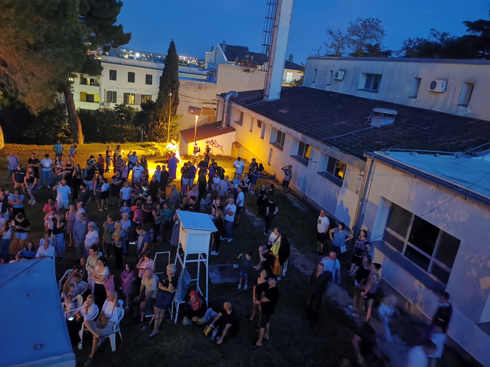
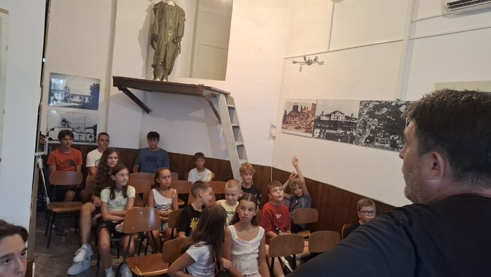
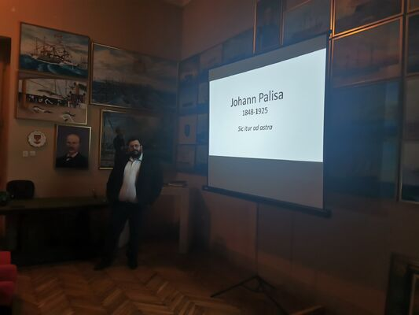
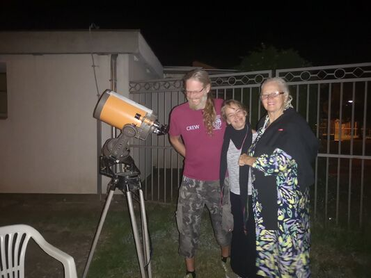

Posjet Pulskoj Zvjezdarnici
Kako bi Astronomsko društvo "Istra" što uspješnije provodilo svoju temeljnu djelatnost, popularizaciju astronomije i ostalih srodnih znanosti, na Pulskoj Zvjezdarnici se upriličuju posjeti zainteresiranih pojedinaca i grupa.
Važna napomena: Posjet Zvjezdarnici je za sada moguć isključivo uz prethodni dogovor.
Što vas očekuje
Posjet, ovisno o uzrastu posjetitelja, općenito uključuje:

Multimedijalno predavanje o svemiru
Predavanje o svemiru prilagođeno uzrastu posjetitelja.

Povijest Zvjezdarnice i naše aktivnosti
Upoznajte povijest Pulske Zvjezdarnice i trenutne aktivnosti Astronomskog društva "Istra".

Promatranje teleskopom
Ovisno o vremenskim uvjetima i objektima koji se u tom trenutku mogu vidjeti.
Kako dogovoriti posjet
Posjeti se upriličuju za zainteresirane pojedince i grupe, isključivo uz prethodni dogovor.
- Javite seNajavite posjet telefonom ili e-mailom.
- Dogovorite terminZa grupe navedite broj i uzrast posjetitelja, kako bi se program prilagodio.
- Dođite na ZvjezdarnicuPark Monte Zaro 2, Pula. Promatranje teleskopom ovisi o vremenskim uvjetima.
Kontakt za dogovor
Iz naših aktivnosti
Predavanja, promatranja Sunca, Mjeseca i planeta te javna promatranja pomrčina – na Zvjezdarnici i izvan nje. Kliknite na fotografiju za uvećanje.